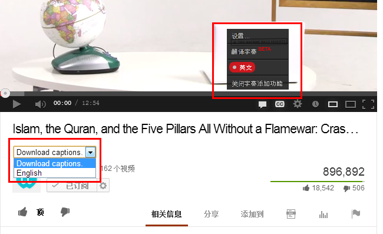
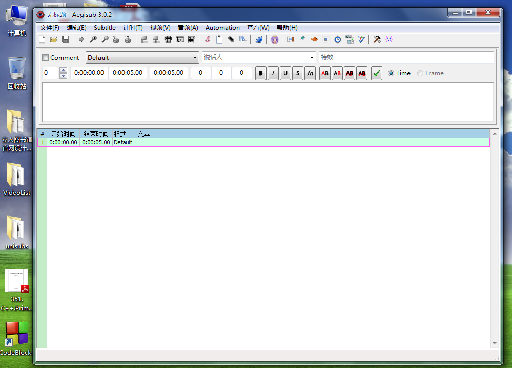
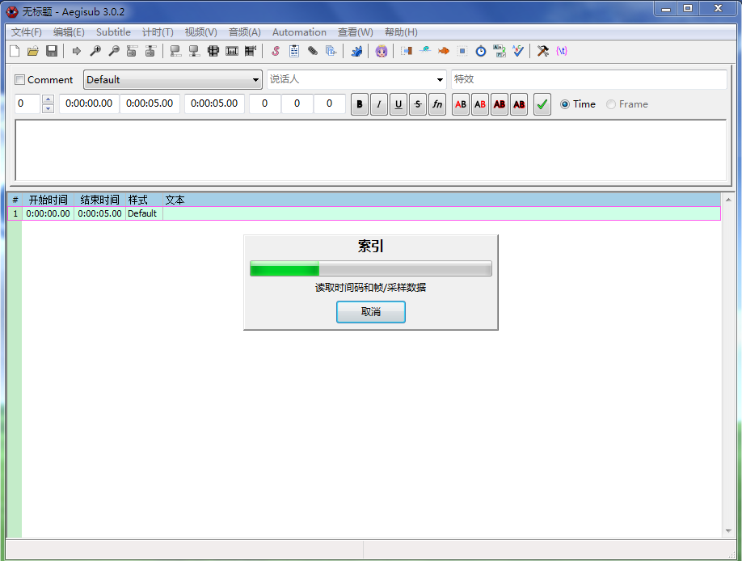
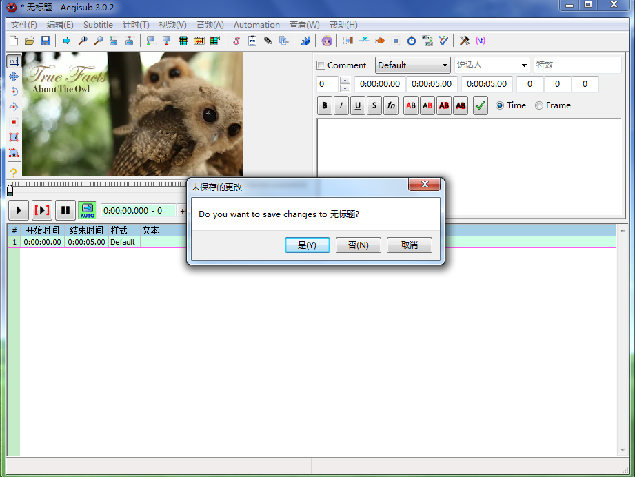
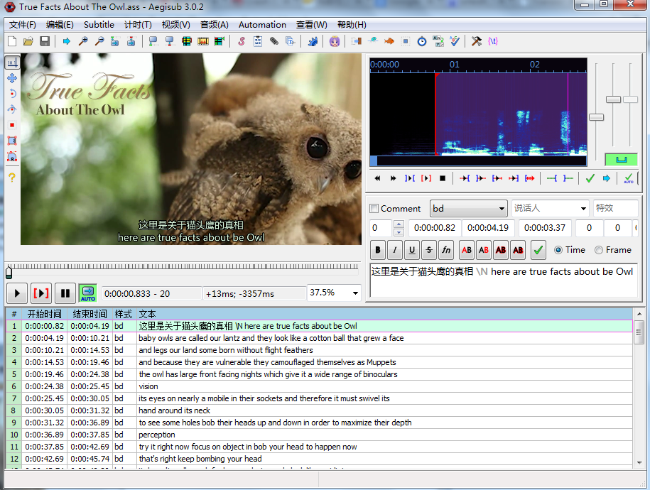
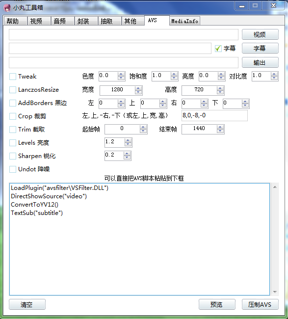
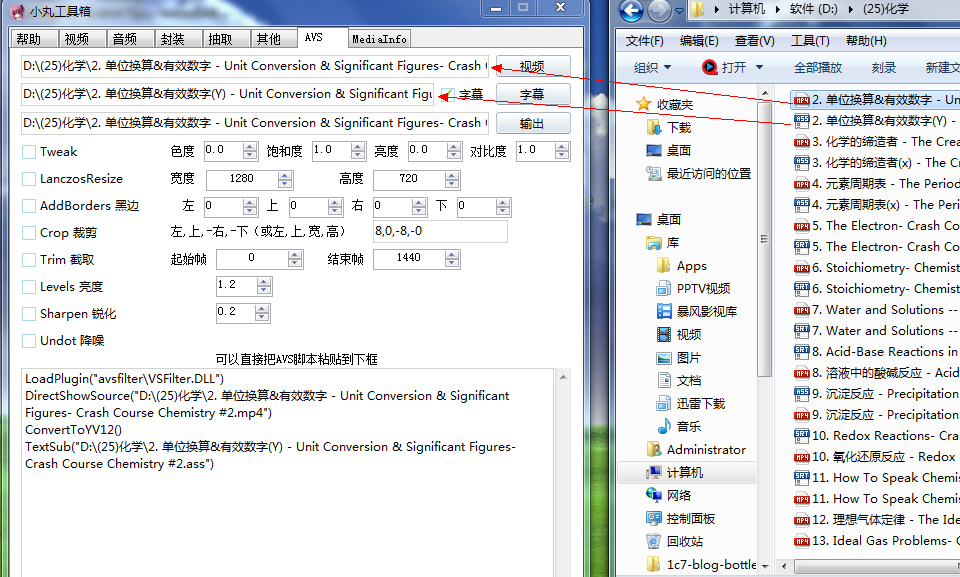
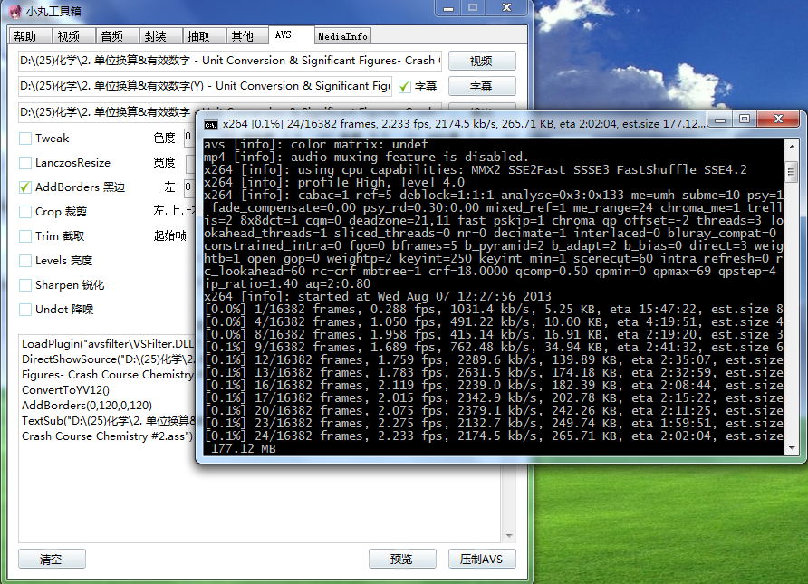
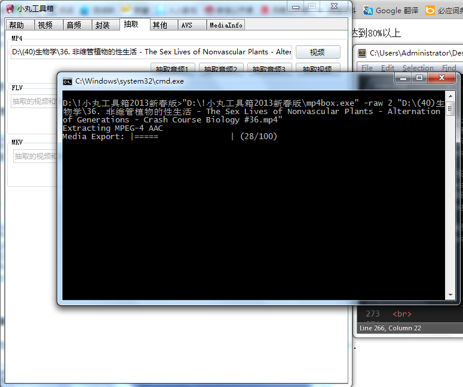
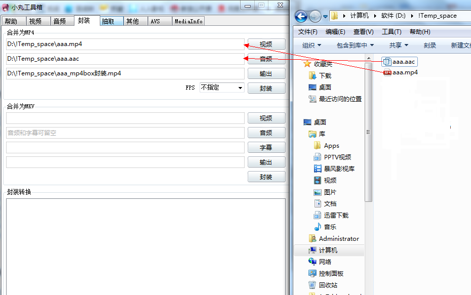

安装完这个 Tampermonkey 脚本后. 每个Youtube视频下面都会有下载按钮
(建议下720p的视频, 具体原因后面会说)
预览图:

这个脚本的汉化有点问题, 标准分辨率和较高分辨率写反了..
写于2013年8月5日
关键词: goagent
相关的教程网上有很多了, 这里不再赘述
Tampermonkey - YouTube Video Download
安装完这个 Tampermonkey 脚本后. 每个Youtube视频下面都会有下载按钮
(建议下720p的视频, 具体原因后面会说)
预览图:
这个脚本的汉化有点问题, 标准分辨率和较高分辨率写反了..
Tampermonkey - Youtube Subtitle Downloader
这个Tampermonkey脚本可以下载[做好的字幕], 安装后每个视频下都会有下载按钮. 推荐!
预览图(没有字幕的视频):
预览图(有字幕的视频):

额外说明: 这个脚本由Tim Smart编写, 我改进了一下..
(Tim Smart的原版不能直接下载, 字幕内容会在新标签页面里打开, 需要用户手动黏贴到新文件里, 现在可以直接下载了)
Tampermonkey - Youtube Auto Subtitle Downloader
这个Tempermonkey脚本可以下载[自动字幕], 安装后每个视频下也会有下载按钮. 推荐!
预览图(有自动字幕的视频):
额外说明: 这个脚本是我写的. 如果有bug就找我吐槽吧..
这样:
这个可以有!
http://www.yousub.net/
但这个网站只能下载[做好的字幕], 不能下载[自动字幕]
而且也不怎么方便.. 不建议使用
你需要[翻译字幕的软件], [压制视频的软件], 以及[转换字幕文件格式的软件]...
这3样是最常用的
打开Aegisub

拖入视频

(上面是正在读取)
(上面是读取完毕)
拖入字幕
拖入字幕这里要额外说明一下, Aegisub对SRT格式字幕的支持不是很好,
有时所有字幕会缩成一行, 如果缩成了一行, 那你就把字幕文件拖入SrtEdit, 转换成ASS格式就行了..
字幕拖入之后是这样的:

(不用鸟它, 点"否"就行, 这个"无标题"指的是当前这个下方这块的空字幕..)
(也不用理它, 同样点"否")
(现在可以了, 开始编辑吧)

点击【音频】 -> 【从视频中打开音频】
现在可以了.. 有声音了..



中间加个\N
打开小丸工具箱
点击"视频"标签页
拖入视频文件和字幕文件
("输出"按钮代表输出的路径和输出的文件名.... 不是压制视频的意思)
点击"压制"按钮
等!
压制好之后你爱扔哪儿扔哪儿吧....
问: 什么是Tampermonkey?
答: 是Chrome的一个扩展, 可以用它方便的写出脚本, 而且它们还提供了一个很方便的平台可以发布和分享脚本..
问: 什么是自动字幕?
答: Youtube有语音识别技术, 可以自动给视频加英文字幕, 准确率挺可观的 正确率平均可以达到80%以上
我之所以自己写下载自动字幕的脚本(见上面的说明), 是因为网上找不到这样的工具....
https://github.com/1c7/Split-StickWord
用这个脚本吧 把字幕文件拖放到 exe/Split_Word.exe 上面即可
程序会根据 split.txt 里面的分割词来分词...
https://github.com/1c7/Translate-Subtitle
把字幕文件拖放到 English-Chinese/Translate_Subtitle.exe 上面即可(支持srt和ass格式, 其他的格式还没测试过)
程序会用谷歌翻译翻译字幕的...
翻译完成后字幕会保存到新文件里..
假设原文件名是: test.srt
新文件名会是: (翻译完成)test.srt
如果你下载的视频是720p的(1280x720), 它是16:9的比例. 你可以把它压制成4:3的(1280x960).
打开小丸工具箱, 点击AVS标签页

拖入视频和字幕

勾选"黑边", 上120, 下120
点击"预览".
(对字体大小不满意的话在Aegisub里修改就行...)
满意后点击"压制AVS"

(小贴士: 如果你不想加黑边 只想在"视频"标签页里压制视频, 也可以先来"AVS"标签页这里预览一下, 预览完了再去"视频"标签页压视频. )
我的机子是windows7 x64位, 用"AVS"压制后 输出的视频文件会没有声音
如果你也碰到这种情况, 解决方法:
进入"抽取"标签页
点击"视频"按钮, 会弹出一个文件选择框, 选择有声音的那个原视频文件..
注意, 必须用按钮方式选, 直接拖入文件会无法抽取音频...
这应该是某种bug吧..
点击"抽取音频1"

进入"封装"标签页
把[没声音但是有字幕的视频文件], 和[音频文件]拖入对应的地方

然后点击"封装"即可
(不要在意这里的文件名, 我是随便拿个文件来演示而已....)